출처: 이륙하자 26HZ (바로가기)
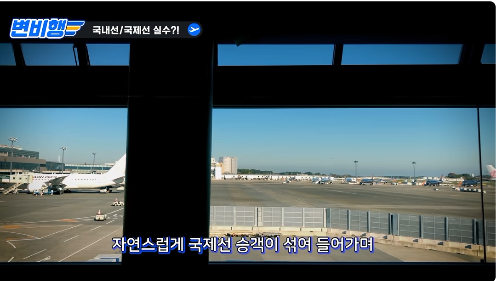
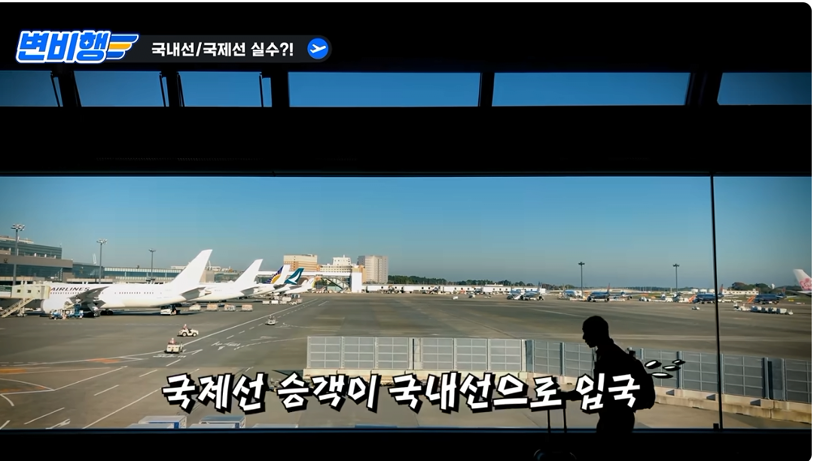
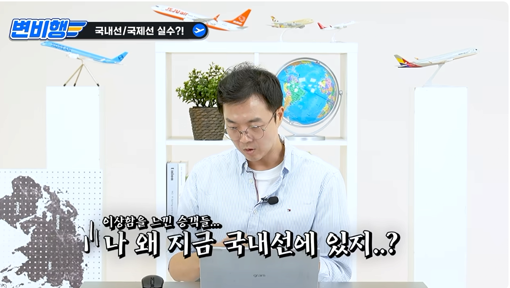
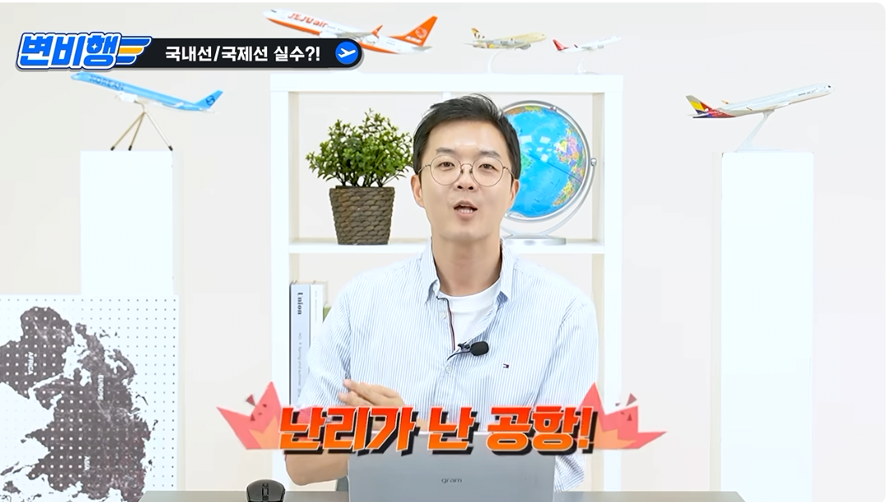
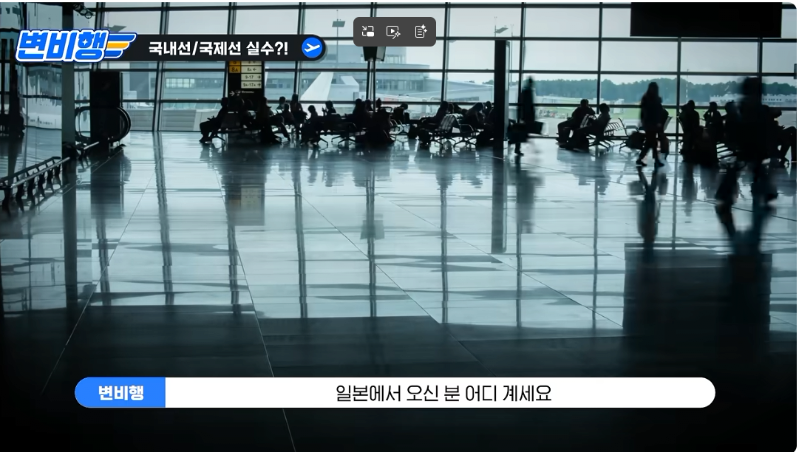
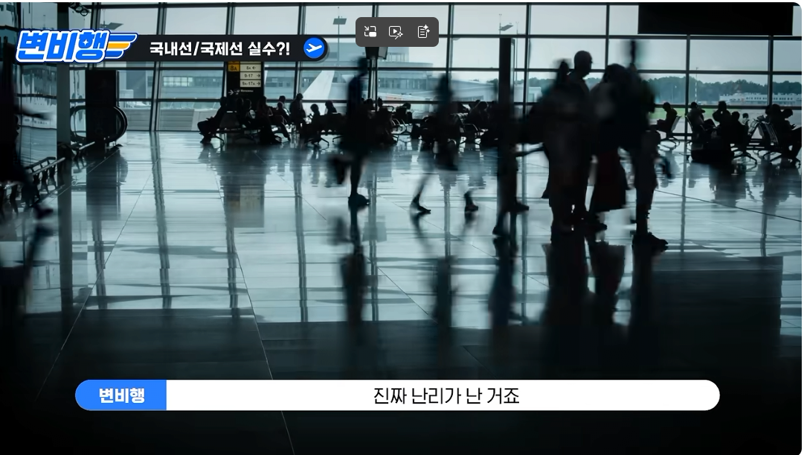
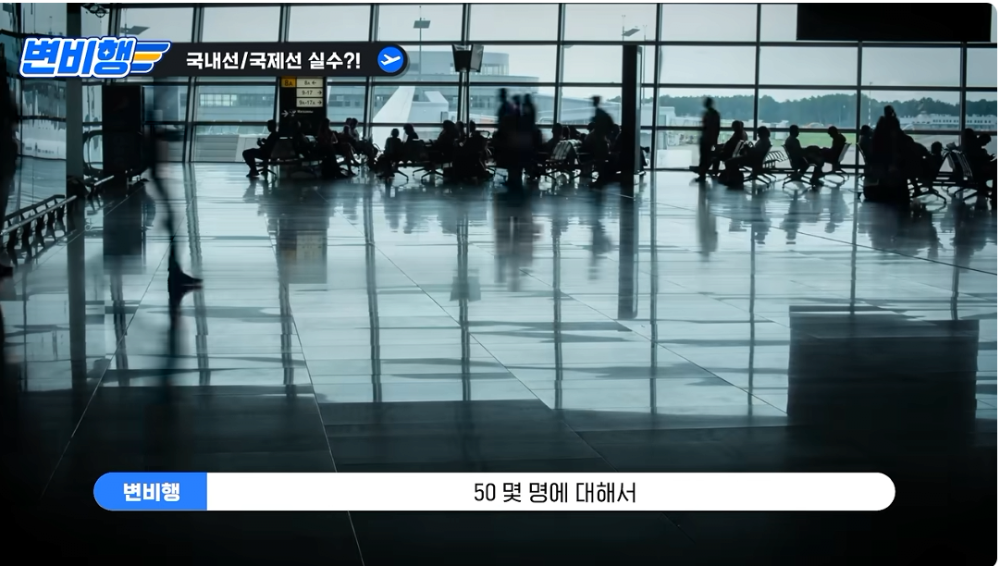
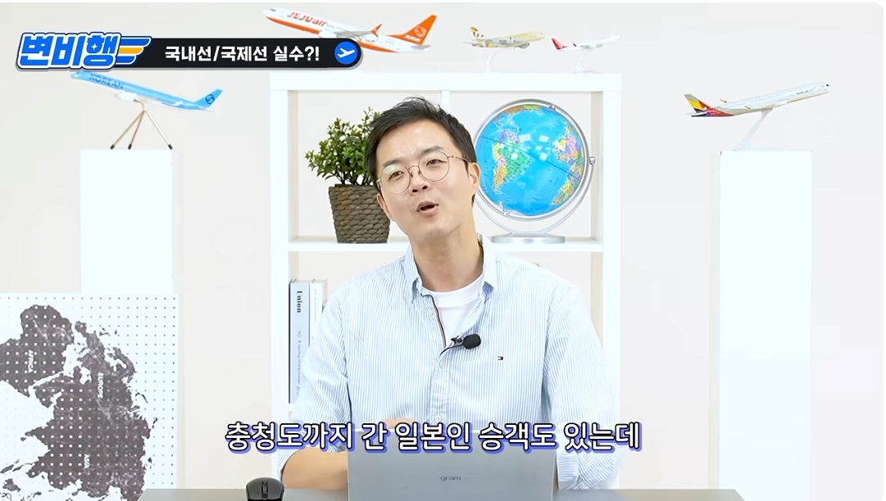
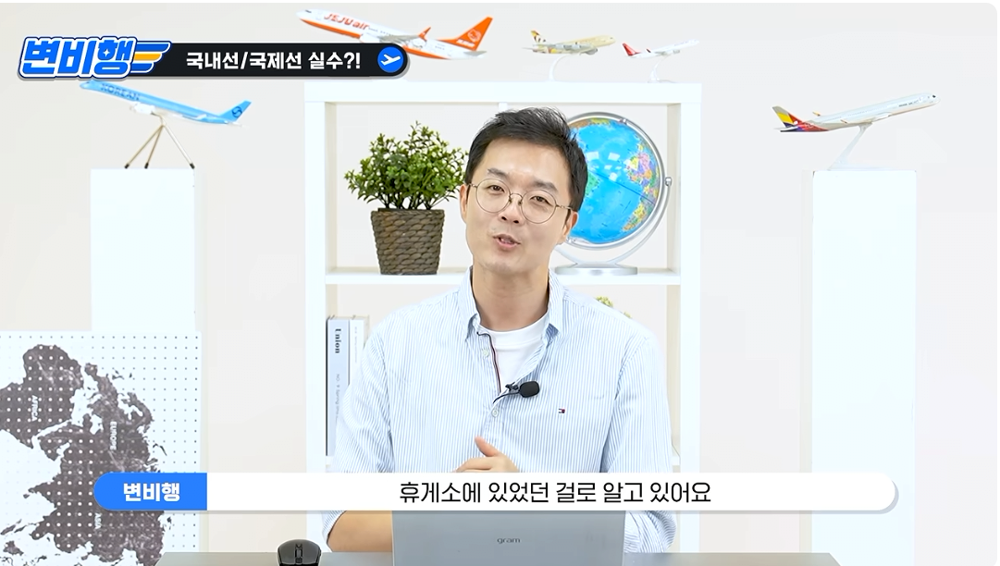
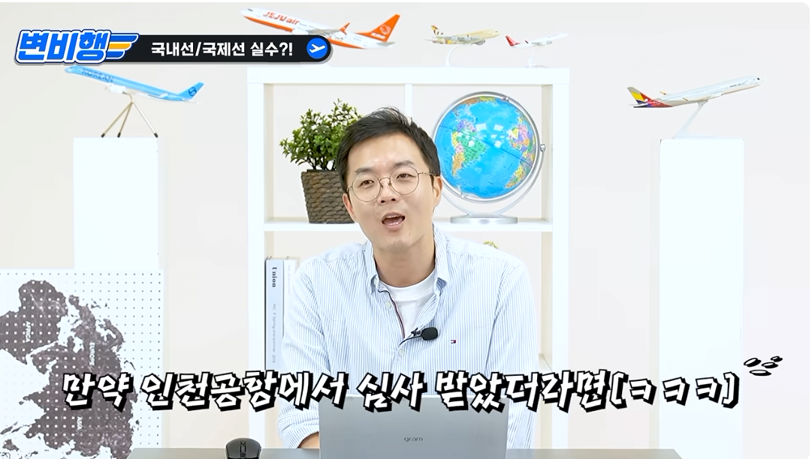
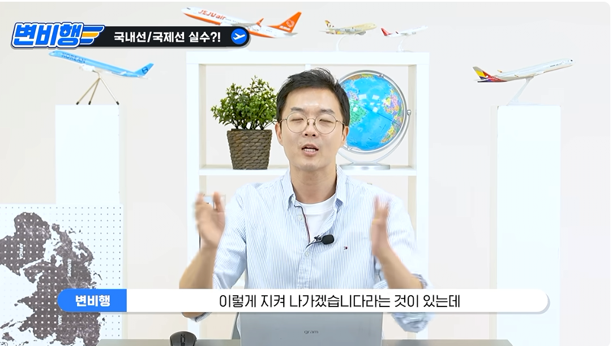
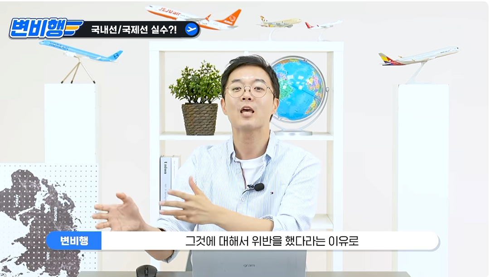
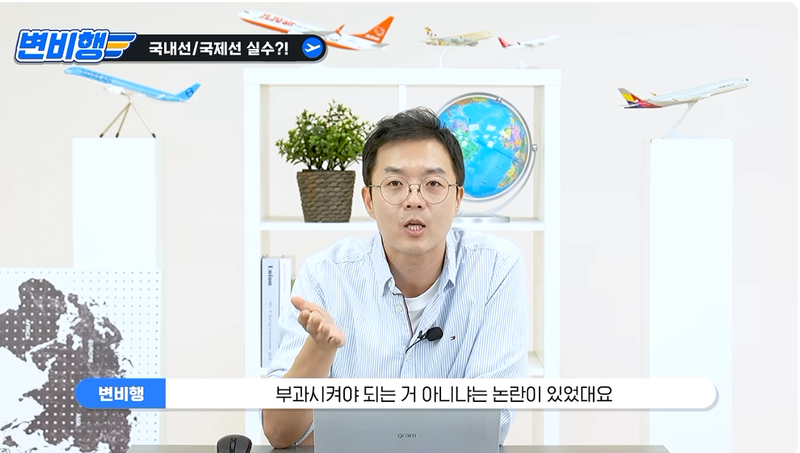
출처: 이륙하자 26HZ (바로가기)













국내선에 내려줘서 그냥 공항 나간 사람들 처벌 시키려고 각 봤다고 본문에 나와 있는데;
공항에 과태료 때린건 알겠는데 승객한테 뭔 불이익을 주겠다는건진 확실하게 나온게 없는거 아닌가해서 물어봤다 취재 못했다고 하니 카더라의 영역같아서
벌금이나 과태료를 부과해야 되는 게 아닌가 하는 논란이 있었다잔슴 후속취재는 못해서 실제 부과여부는 모르니 글 쓴 개붕이도 제목은 검토 라고 한거고
공항 과태료 x 항공사 과태료 o
공항 = 항공사 인줄 아는 사람 많긴 하더라.
공항공사 vs 항공사인데
일본인이여서 다시왔지 중국인이였으면 그대로 잠적임 ㅇㅇ
여러번 해외왔다갔다하지만
입국심사가 있는지 없는지
어딜가나 너무 잘되어 있어서
요즘은 헷갈려
찐빠 제대로 냈네
일본사람들은 엥 뭐가 바뀌었나? 하고 그냥 나갔을 수 도 있지 ㅋㅋㅋ 서로 무비자라
저걸 개인 처벌은 씹 ㅋㅋ
하네다라 그나마 낫지
서쪽에서 왔었다면 ㅋㅋㅋㅋ
아니시발 서로 최첨단에 무비자니깐
아그냥 자동으로 통과되는갑다 이러고 다들 자연스럽게 나가니깐 나간거지
애미디진 시발 저걸고의로 나가는사람이 누가있는데 ㅋㅋㅋ
일본이 한국에 저걸노리고 불법입국을했겠냐?
일본에서 비자 문제로 한국 오는 중국인이 꽤 많은지라. 다 조사는 해야함
미국 캐나다 같은경우에 출국하는 캐나다 공항에서 입국심사해서 미국에는 국내선 공항에 내려주는데 비슷한 다른나라들 사례 같은것도 생각해보면 충분히 걍 갈 가능성도 있을듯
너처럼 그냥 나간 승객들이 금치산자급으로 멍청하다면은 인정임ㅋ
해외여행 많이 안가본 티내는거 보니깐
애미가좀 많이 가난하신가보네
아? 없...나? 그러면 이해함
나도 같은 생각함
요즘에 한듯 안한듯 지나가는 나라가 많아져서 나같아도.. 오 항코쿠는 어디선가 자동으로 다 했나보네?
했을수도
다들 당연하다는듯지 자연스럽게 나가는데 당연히 혼동오지 ㅋㅋㅋ
동경-경성 국내선 실현 ㄷㄷㄷ
미일쪽은 꾸준히 입국심사 한국에서 하자는 이야기 나오기도 하니까
떳다떳다 변비행
이런 시발 이걸 승객한테 뭔 처벌을 하려 했다고???
내선일체... .으읔.... 머리가
제주도는 안잡고?
제주도서도 국제선 입국자들 국내선으로 안내한적있음?
타임슬립해서 한일합방시로 온줄ㅋㅋ
법무부가 뭘 했단거야 그래서?